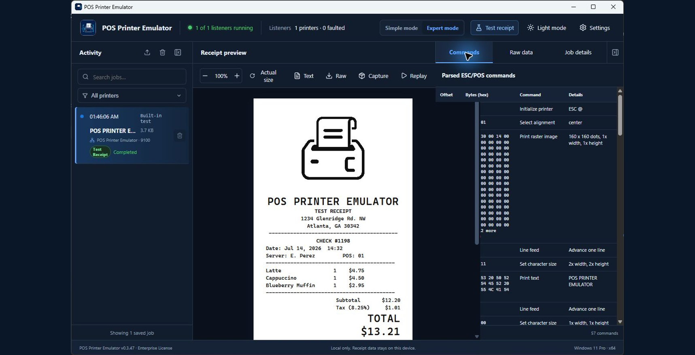

Current release: v0.3.55 replaces manual promotional-key entry with a secure Five-Day Promotional Trial for eligible Lite, Pro, and Enterprise evaluations.
Quick start
- Download and run the all-in-one Windows installer as an administrator.
- Launch the application and confirm Running (listening) appears beside port 9100.
- Select Test receipt to confirm receipt rendering.
- Point the POS at the Windows PC’s IP address with RAW TCP/IP port 9100.
- Send a receipt and select the job in Activity to inspect it.
Complete main page guide
Learn the screen you will use most
Understand listener health, Activity, receipt preview tools, Commands, Raw data, Job details, panel controls, common examples, and troubleshooting.
Open the main page guide
Application areas
Activity
Shows received print jobs with time, source, printer listener, size, status, and warnings. Select a job to inspect it. Pro and Enterprise customers can filter or clear Activity for one printer while keeping jobs from other listeners. Collapse the panel when you need more preview space.
Receipt preview
Displays the rendered thermal receipt. Zoom, return to actual size, view extracted text or raw content, and use paid-license text, raw, print/PDF, capture, replay, and Copy Receipt as Image tools. Copy Receipt as Image places a PNG on the Windows clipboard for pasting into another application. Trial previews include a watermark and paid tools remain locked.
Commands, Raw data, and Job details
The Commands tab decodes ESC/POS instructions with byte offsets and explanations. Raw data displays the original payload. Job details lists receipt ID, time, source address, payload size, result, and unsupported-command count. The right panel can be collapsed.
Enterprise diagnostic reports
The Standard Development Diagnostics Report and Advanced Diagnostics Package are Enterprise-only tools. They can include a rendered receipt image, parsed ESC/POS commands, raw print data, job details, warnings and errors, unsupported commands, listener and application configuration, environment and version information, and advanced technical troubleshooting details after the user reviews the package.
Read the complete illustrated main page guide for every control, example workflow, limitation, and captioned video lesson.
Connecting a POS
Use direct RAW TCP/IP when your POS supports a network printer:
enter the emulator PC’s IPv4 address and port 9100.
For a POS that requires a Windows printer, open Settings → Printer
Setup and use the guided wizard. A
manual Windows port guide
is also available.
Printer Profiles
Lite, Pro, and Enterprise customers can open Settings → Printer
Profiles to select a built-in Epson TM-T88V or generic ESC/POS
profile, create custom profiles, and import or export
.ppeprofile files. Profiles define paper width,
printable dots, code pages, image limits, and supported printer
capabilities so receipts can be validated against the target
printer. Printer Profiles are locked in the Trial License.
Printer Listener Allowances
Trial and Lite allow one total listener, Pro allows two, and Enterprise allows up to 15. Pro and Enterprise unlock Settings → Printer Listeners for their additional endpoints. Assign each printer a unique name, TCP port, network address, and printer profile; then start, stop, restart, and monitor it without interrupting the other listeners. Each printer keeps its own simulated state, buffer, connection counters, and error status.
Registration and activation
Every installation begins in Trial Mode. To activate, open Settings → License, select Link This Computer, and sign in to your verified Customer Portal account. Review the computer information, choose an eligible Lite, Pro, or Enterprise License, and approve the link. The application detects approval and activates automatically without a reinstall. Temporary link codes expire after 10 minutes and work only once.
License ownership is established only through a verified Customer Portal account. No copy-and-paste license credential is required. Before moving a license, deactivate its current computer in the portal; then link and approve the replacement computer. If the old computer is unavailable, submit a License Issue through the portal for support-assisted recovery.
Trial limits
- One automatically configured printer listener named POS Printer Emulator.
- Local connection address
127.0.0.1, beginning at port9100; the setup wizard selects the next available port if 9100 is assigned. - Five external POS print jobs per local calendar day.
- Unlimited built-in Test Receipts; they are clearly identified and do not use the external-job allowance.
- No historical print-job data beyond the current session.
- TRIAL watermark across the receipt viewer.
- History, exports, Copy Receipt as Image, capture/import/replay, Printer Profiles, Stored Logos, Printer State, update checks, assisted support, and diagnostic PDF reports are unavailable.
Five-Day Promotional Trial
The base Trial License and the Five-Day Promotional Trial are different. An eligible verified customer and eligible device may claim one server-authorized five-day evaluation of Lite, Pro, or Enterprise. The application shows the evaluated edition, start and expiration times, and live time remaining. Reinstalling or removing the application does not create another promotional entitlement. When the five-day evaluation expires, the previous Trial or permanent license returns automatically and the application presents an upgrade action.
Application-verified license comparison
Loading the current license comparison…
Configuration backup and restore
Open Settings → Backup & Restore to create a password-encrypted
.ppebackup file or restore a previously saved
configuration. Backups are restored inside POS Printer Emulator;
they are not normal ZIP archives and should not be extracted in
Windows.
Follow the illustrated backup and restore guide for the complete review, confirmation, and recovery process.
Illustrated Settings guides
Each guide follows the current Windows application and includes real screenshots, recommended choices, and recovery tips. The running POS Printer Emulator version is displayed in the lower-left corner throughout Settings so customers and support staff can confirm the installed build.
Annual Application Maintenance and Support
A new Lite, Pro, or Enterprise license includes one year of application updates and upgrades, assisted technical support, and Check for Updates access. The software license is still a permanent one-time purchase, not a subscription.
When maintenance expires, the installed application, purchased features, local history, and licensed listeners continue working. Check for Updates, update downloads, and assisted support remain unavailable until coverage is renewed. Assisted account or device recovery for a newer version also requires active coverage. Local health information, activation diagnostics, troubleshooting details, and privacy-safe log export stay available without active maintenance.
Loading current renewal pricing…
- Early renewal adds 12 months to the current expiration date; lapsed renewal begins on the confirmed payment date.
- Paid licenses issued before the maintenance policy launched receive maintenance through July 19, 2027.
Troubleshooting
- Listener not running: restart the application or Windows service and confirm port 9100 is not used by another process.
- No incoming job: verify IP address, RAW protocol, port 9100, network profile, and firewall access.
- Unexpected formatting: check Commands and warnings for unsupported or vendor-specific instructions.
- Activation rejected: verify the customer details and key exactly match the issued license.
- Maintenance expired: the purchased application continues working. Renew the optional plan to restore update and assisted-support access, or use the always-available local diagnostic tools for self-service troubleshooting.